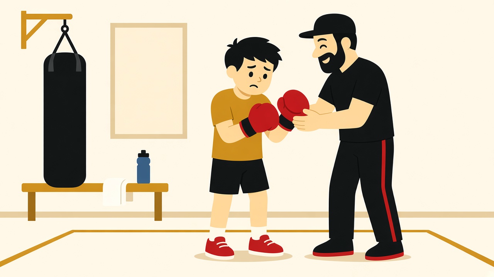

Первая тренировка · 09.11.2026

Ты приходишь минут за десять до начала. Переобуваешься, осматриваешься. В зале уже стучит мешок, кто-то прыгает на скакалке. Первые минуты часто даются непросто: новое место, новые люди, и пока непонятно, с чего начнётся час.
Первая тренировка мало похожа на фильмы, где новичка сразу ставят в ринг. На пробном занятии тебя знакомят с залом, с базовыми движениями и с тем, как рассчитывать силы.
Частый вопрос: будут ли сразу боксировать с партнёром. Нет. В первый час тебя не поставят спарринговать. Спарринг — отдельный этап. К нему переходят, когда есть базовая техника, контроль удара и желание самого человека. Без готовности и согласия его не открывают.
Первая тренировка — это знакомство с залом, со своим телом и с нагрузкой. Даже короткие раунды по три минуты для новичка бывают ощутимо тяжёлыми.
Занятие начинается с разминки: шея, плечи, корпус, ноги. Затем скакалка или работа ног на месте. Движения выглядят простыми, но через несколько минут поднимается пульс и появляется одышка — особенно если день обычно проходит сидя.
Бокс в большой степени строится на ногах: на передвижении, устойчивости и переносе веса. Руки подключают позже, а дыхание нужно контролировать уже на разминке.
Если закружилась голова или стало тяжело — скажи тренеру. Он снизит темп. Пот и красное лицо в первый день — обычная реакция. Терпеть до плохого самочувствия не нужно.
Дальше ставят стойку. Ноги не на одной линии и не параллельно, как при обычной ходьбе: одна чуть впереди, вес распределён так, чтобы можно было шагнуть вперёд и не потерять равновесие назад. Кулаки у лица, подбородок слегка опущен, локти закрывают корпус и не торчат в стороны.
Первый удар — джеб: короткий, прямой, с выдохом. Новичок часто сразу бьёт изо всех сил и слишком широко. В первый день важнее точность и правильное движение, а не мощность. Сила появится позже — из ног и разворота корпуса.
На каждом ударе нужен короткий выдох. Если задерживать дыхание, к середине раунда не будет хватать воздуха.
Тренер будет поправлять снова и снова. Это не придирки: без подсказки руки сами уходят в широкий замах, корпус открывается, удар выглядит эффектно, но получается слабым и оставляет тебя незащищённым. Компактное движение бережёт силы и меньше раскрывает корпус.
Нагрузку тренер подстроит под тебя: взрослый после сидячего дня и ребёнок на пробном занятии работают не в одном темпе.
Когда надевают перчатки и дают поработать на лапах или мешке, появляется ощущение, что начался сам бокс. Раунд при этом короткий, а руки и плечи устают быстро — так отзываются мышцы, которые раньше так не нагружали.
Типичные ошибки первого раза: слишком широкий замах, вторая рука опускается и не держит защиту, взгляд уходит на свой кулак вместо цели. Их разбирают и повторяют. Задача первого занятия — понять движение, а не нанести идеальный удар.
В конце обычно есть небольшая общая физическая работа: упражнения на корпус, ноги и общую выносливость. После неё нагрузка ощущается уже по всему телу, не только в руках и плечах.
С детьми первый час ещё меньше похож на бой. Это занятие с элементами игры: реакция, координация, умение слушать и ждать свою очередь, различать левую и правую руку. Детей в клубе принимают с пяти лет. В таком возрасте никто никого не бьёт. Учат двигаться, держать внимание и не бояться зала.
Родителю не стоит ждать синяков после первой тренировки. Обычно ребёнок устаёт, краснеет и по дороге домой спрашивает, когда можно прийти снова.
Спортивная форма, в которой удобно двигать руками и приседать. Кроссовки. Вода. Полотенце. На первый раз перчатки обычно есть в зале, покупать свои до пробной тренировки не обязательно.
Не сравнивай себя с теми, кто занимается уже несколько месяцев. У каждого была своя первая тренировка, и темп у всех разный.
Если есть вопросы по давлению, сердцу или суставам — сначала проконсультируйся с врачом, потом приходи в зал. Тренер подстроит нагрузку, но медицинскую консультацию не заменяет.
После часа ты, скорее всего, вспотеешь и устанешь, но уже будешь понимать, из чего состоит занятие. На следующий день могут болеть пресс, икры, мышцы между рёбрами — те, что включались, пока ты учился дышать и держать стойку. Это обычная мышечная усталость после новой нагрузки, а не признак, что что-то пошло не так.
Первая тренировка не сделает из тебя боксёра за один час. Она даёт основу: как стоять, как дышать, как бить прямо и как рассчитывать силы. Этого достаточно, чтобы решить, хочешь ли ты продолжать.
Живёшь в Перми — приходи на пробную в «Золотые перчатки»: https://goldengloves59.ru